토스 디자이너에서 창업가로
강영화 님은 디자인을 10년 넘게 해 왔어요. 2019년 토스에 툴즈 디자이너로 들어가 사내 도구를 만들었고, 툴즈 조직이 40~50명 규모로 커질 때까지 약 4년을 일했어요. 그 사이 운영하던 사이드 프로젝트가 성과를 내기 시작하면서 퇴사했고, 지금은 창업 4년 차예요. 짧은 시간에 아이템이 여러 번 바뀌었으니 흐름부터 보고 갈게요.
운세 앱이 먼저 돈을 벌었어요
첫 목표는 일단 살아남을 돈을 버는 거였어요. 운세 시장에서 전화로 타로를 봐 주는 서비스를 열었고, 타로는 거의 강영화 님이 직접 봤대요. 3일 만에 매출이 났지만 사람이 한 건씩 봐야 해서 유닛 이코노믹스가 맞지 않았어요.
그래서 사용자를 싸게 데려올 방법으로 타로 앱 '우주 고양이 보라'를 만들었어요. 900원짜리 유료 상품을 붙이자 하루 만에 매출이 났어요. 운세 업계 출신들을 인터뷰했더니 한국에서는 사주를 넣으면 잘될 거라는 조언을 받았고, 실제로 그랬어요. 2024년 초 매출이 크게 늘자 공동 창업자들이 모두 회사를 그만두고 올인했어요. 앱스토어 1위를 찍었고 가입자는 약 120만 명, 지난해 연매출은 약 20억 원이었어요.
그런데 막상 계속하려니 열심히 하기가 싫고, 의미가 없는 것 같았대요. 그래서 2025년 초 새 아이템을 찾았어요. 진행자 소개에 따르면 우주 고양이 보라는 이후 매각했어요.
Else는 내 맥락에 맞춘 영어 회화 앱이에요
Else는 일하는 사람을 위한 영어 회화 앱이에요. 듀오링고 같은 앱은 사용자의 맥락을 모르니 일반적인 영어를 가르칠 수밖에 없어요. AI라면 내 상황에 맞는 콘텐츠를 골라 줄 수 있다는 게 출발점이에요. 아래 화면은 Else 소개 페이지예요. 왼쪽 위에 '엘스, 나만의 AI 영어 선생님'이라는 문구와 휴대폰 화면 속 고양이 캐릭터가 보여요.
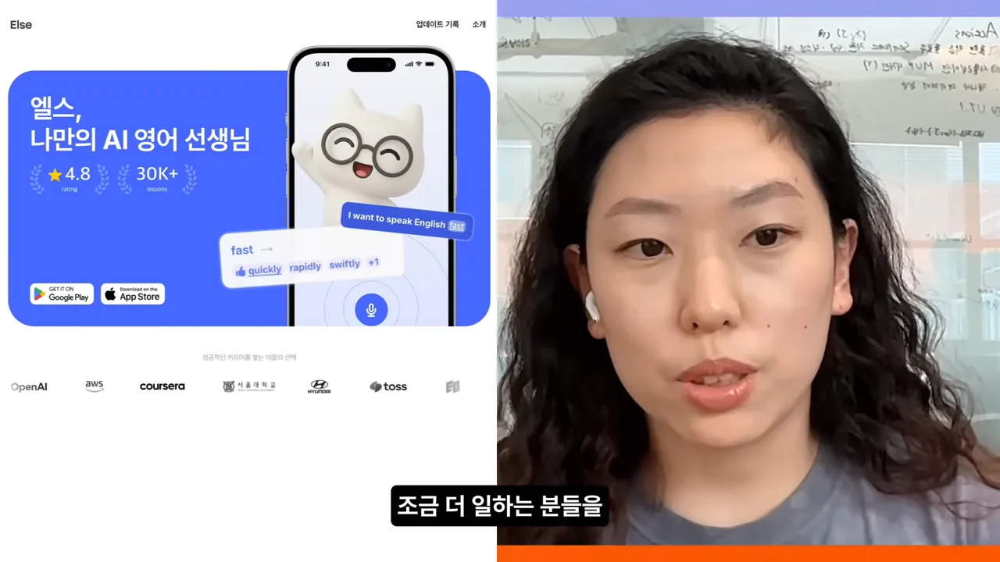
처음부터 미국 시장을 노리고 팀 전체가 3개월간 미국에 갔지만 잘되지 않았어요. 강영화 님은 이걸 "엄청 비싼 수업료"라고 표현해요. 지금은 한국에서 다시 키우고 있고, 그때 무엇이 잘못됐는지는 뒤의 '기능을 다 넣으면 망해요' 절에서 다시 나와요.
비주얼 디자인: 초안은 AI, 마감은 사람
강영화 님이 보기에 디자이너용 AI 도구는 아직 흩어져 있어요. 그렇다고 워크플로우를 새로 다 짜기엔 리소스가 너무 들어요. 그래서 원래 일하던 흐름 안에서 AI로 지렛대를 걸 수 있는 곳만 골라 써요. 주로 쓰는 건 Gemini, ChatGPT, Claude 채팅, Claude Design, Claude Code예요.
상장 하나를 만드는 순서
예시는 Else 안에서 운영한 1:1 영어 스터디 '스피킹 클럽' 1기 수료 상장이에요. 사용자들이 주 3일 정도 랜덤으로 짝을 지어 공부했는데, 첫 기수를 그냥 끝내기 아쉬워서 상장을 출력해 주기로 했대요. 디자인 리소스는 부족하니 AI와 같이 만들었어요.
핵심은 둘째 칸이에요. Pinterest에서 고른 레퍼런스를 Gemini에 넣고 바로 이미지를 달라고 하지 않아요. 아래 화면 오른쪽 아래 말풍선을 보면 "이미지 만들지 말고 구성 계획을 해줘"라고 적혀 있어요. 따로 말하지 않으면 마음에 안 드는 이미지를 곧장 만들어 버려서예요. 위쪽 이미지는 레퍼런스로 넣은 'BIRTHDAY' 영수증 스타일 포스터예요.
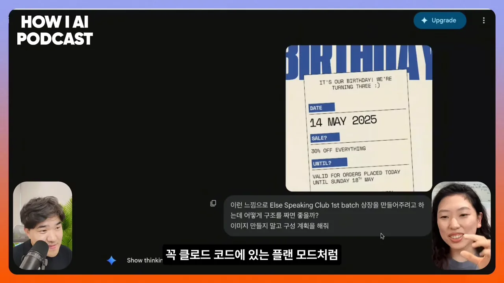
문화적인 질문도 LLM(Large Language Model)에게 물어요. 한국에는 '참 잘했어요' 도장이 있는데 영어권에는 뭐가 있냐고 물은 거예요. 아래 답변 위쪽에는 "황금별 이런 건 아이들한테 쓰는 거야?"라는 질문이 있고, Gemini는 Gold Star는 유치원 느낌이 강하다며 성인용으로는 권위와 공식력을 주는 형태, 예를 들어 실링 왁스나 압인을 제안해요.
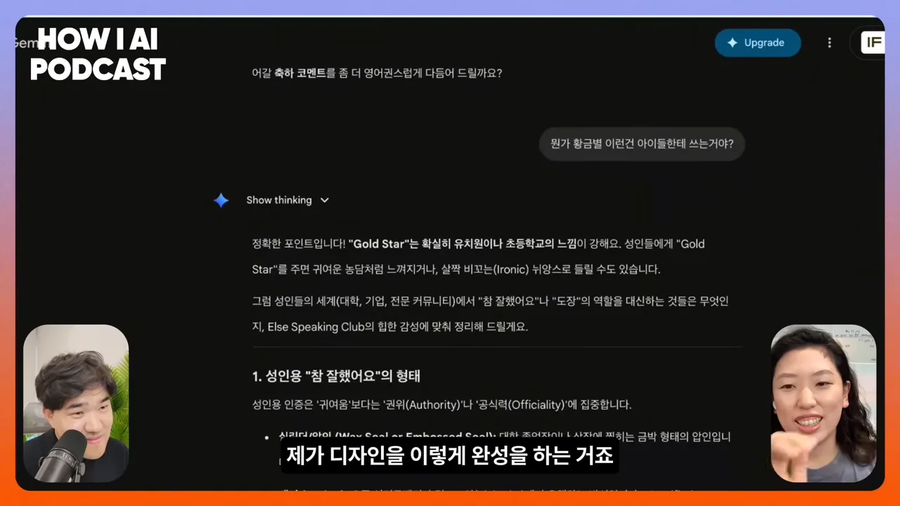
이미지 초안이 나오면 Figma로 옮겨요. 텍스트를 하나하나 쪼갠 다음 Google Fonts나 눈누에서 찾은 폰트를 각각 입혀요. 영문이 예쁜 폰트가 많아서 영문 폰트 위주로 골랐대요. 아래 비교에서 왼쪽이 AI 초안, 오른쪽이 완성본이에요. 오른쪽에는 'SPEAKING CLUB' 손글씨 제목과 'Gabby' 서명이 들어가 훨씬 정돈돼 보여요.
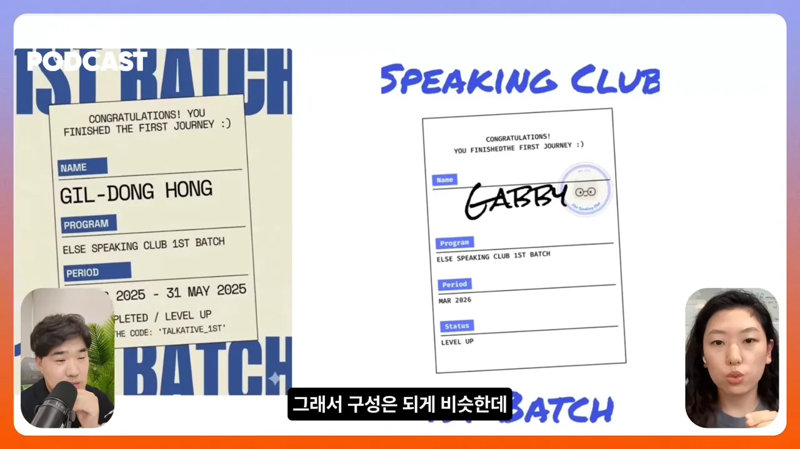
스티커도 같은 방식이에요
티셔츠 굿즈 겸 스티커도 같은 흐름으로 만들었어요. Gemini에게 쓸 만한 문구를 추천받고 일러스트도 넣어 달라고 했더니 안경 쓴 고양이가 나왔어요. 아래 왼쪽이 Gemini 초안, 오른쪽이 Figma에서 다듬은 버전이에요. 오른쪽은 고양이와 'ELSE' 글자에 흰 테두리를 둘러 스티커로 오려 낼 수 있는 모양이 됐고, 문구도 'ELSE SPEAKING CLUB 1ST BATCH MEMBER'로 바뀌었어요.
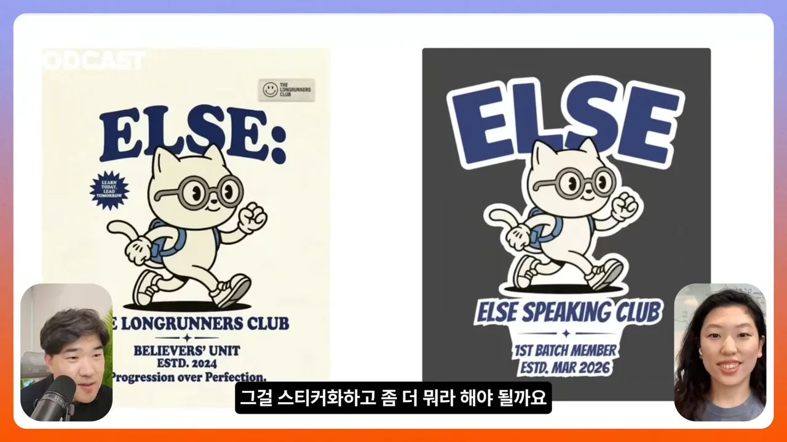
진행자가 AI도 벡터화를 해 주는데 왜 Figma로 다시 가져오냐고 물어요. 답은 두 가지예요. 우선 완성도가 마음에 안 들었고, 인쇄소에 맡기려면 파일이 정교하게 정리돼 있어야 해서 그대로 넘기면 안 되는 경우가 많대요. 정리하면 AI의 상상력이 필요한 초반은 AI에게 맡기고, 엣지가 있어야 하고 물성이 중요한 디렉팅은 사람이 가져가요.
프로덕트 디자인은 Claude Design으로
진행자는 포스터처럼 결과물이 하나로 끝나는 작업과 달리, 앱 화면을 만드는 프로덕트 디자인에도 이 방식이 통하냐고 물어요. 촬영 2~3주 전에 Claude Design이 나와서 바로 써 봤고, 실제로 잘해 줬대요. 여기서도 원칙은 같아요. 초안은 AI가, 디테일은 사람이 잡아요.
아래는 강영화 님의 Claude Design 첫 화면이에요. 왼쪽에서 새 프로토타입을 Wireframe으로 만들지 High fidelity로 만들지 고르고, 오른쪽에는 '롤플레잉 선택 화면', '워킹홀리데이 온보딩', '바리스타 워홀' 같은 작업들이 쌓여 있어요.
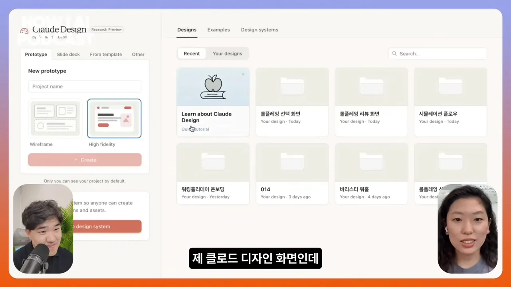
워킹홀리데이 앱 홈 화면을 만든 순서
요즘 Else는 워킹홀리데이를 떠나는 사람을 노려요. 현지에서 바리스타나 리테일 일을 할 때 바로 쓰는 표현을 배울 곳이 부족하고, 다른 앱은 일반적인 표현 위주라 Else가 잘할 수 있는 틈이라고 봤대요. 이 홈 화면은 다음 순서로 나왔어요.
flowchart LR A["PRD를 텍스트로 정리"] --> B["Figma에서 와이어 초안"] B --> C["PRD와 초안을 Claude Design에"] C --> D["질문에 답하며 하이 피델리티 화면"] D --> E["눌러 보며 UI 확정"] E --> F["Figma 플로우 차트"] F --> G["엔지니어와 소통 또는 직접 구현"]
첫 단계인 PRD는 아래 화면 왼쪽에 그대로 보여요. 제목은 '[PRD] 워킹홀리데이 맞춤 실전 영어 앱 - 홈 화면(Dashboard)'이고, 배경 및 목적, 타깃 유저, 핵심 기능 요구사항 순으로 적혀 있어요. 오른쪽은 Claude Design이 만든 화면이에요. '호주 | 2026년 7월 시작'과 D-90, 바리스타·리테일·생존영어 탭, 롤플레잉 카드가 보여요.
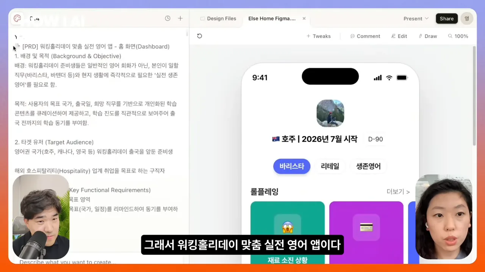
둘째 단계의 Figma 초안은 회색 네모만 있는 거친 화면이에요. 아래 화면 가운데 휴대폰이 Figma 초안이에요. 롤플레잉 카드가 모두 '진상 고객 대처하기'라는 같은 글자를 단 검은 칸이에요. 오른쪽에 크게 보이는 게 Claude Design이 이 초안을 받아 만든 화면이에요.
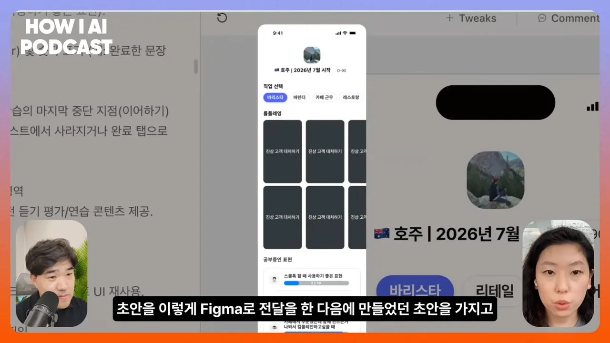
질문해 주고, 다 눌러 볼 수 있어요
제일 좋았던 점은 Claude Design이 먼저 질문을 한다는 거예요. "어떤 맥락에서 뭐가 필요해?", "이런 디자인과 저런 디자인 중 뭘 원해?" 같은 질문에 답하다 보면 스스로도 다시 생각하게 되고, 그래서 디자인이 잘 나온다고 해요. 이 질문하는 방식을 자기 디자인 과정에도 가져와야겠다고 생각했대요.
또 하나는 화면이 하이 피델리티로 나오고 다 클릭된다는 점이에요. 아래는 리테일 탭을 누른 상태예요. 롤플레잉 카드가 '환불 요청 처리', '사이즈 교환 응대'로 바뀌었고, 표현 학습 목록도 '영수증/환불 관련 표현', '재고 확인' 같은 리테일 내용으로 채워졌어요. 각 탭의 내용은 PRD에 적지 않았는데 알아서 만들어 넣은 거예요.
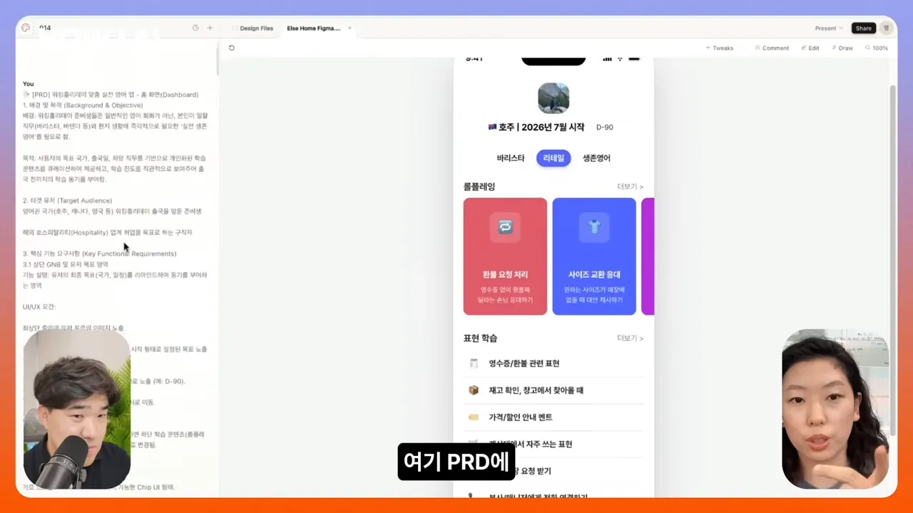
왜 이렇게까지 AI를 쓸까요
이유는 솔직하게 "개발자가 부러워서"예요. 엔지니어 생산성은 말도 안 되게 올라갔는데 디자이너는 아직 따라가지 못하고 있어요. 진행자도 같은 차이를 짚어요. 개발자는 이제 개발을 통째로 AI에게 맡기고, 더 잘 맡기려고 하네스나 문서, 에이전트까지 세팅해요. 반면 디자이너는 아직 마감이 안 된다며 일부 단계에서만 지렛대로 써요. 초기 창업 팀이라 리소스가 적다는 것도 AI를 곳곳에 넣는 이유예요.
AI가 디자이너를 대체할까요?
진행자는 결국 AI가 디자인을 다 대체할지, 끝까지 사람이 마감해야 할지 물어요. 강영화 님도 처음엔 대체될 거라 생각했대요. 그런데 Claude Design을 써 보고는 "언젠가는 할 수도 있지만 당분간은 아닐 것"으로 생각이 바뀌었어요.
근거로 든 건 Jenny Wen의 인터뷰예요. 강영화 님은 그를 Claude의 디자인 책임자라고 소개해요. 그도 디자이너는 당분간 살아남을 거라고, 특히 아주 잘하는 사람이나 열정 있는 주니어는 계속 채용될 거라고 말했대요. 다만 어떻게 될지 모르니 꽤 많이 따라가야 한다는 게 강영화 님 생각이에요. 진행자는 개발자가 직접 코드를 쓰지 않게 된 만큼 디자인에도 큰 변화가 올 거라고 조심스럽게 덧붙여요.
데이터 분석은 에이전트에게 넘어갔어요
예전에 강영화 님은 Amplitude 로그를 직접 긁어 와서 AI에게 정량 분석을 시켜 보곤 했어요. 지금은 그럴 필요가 없어졌대요. 팀에서 Hermes Agent를 열심히 쓰는데, Amplitude 권한을 주고 시키면 알아서 잘해 준다는 거예요. 아래 화면에 겹쳐 뜬 게 Hermes Agent 소개 카드예요. 'An agent that grows with you'라는 문구가 보여요.
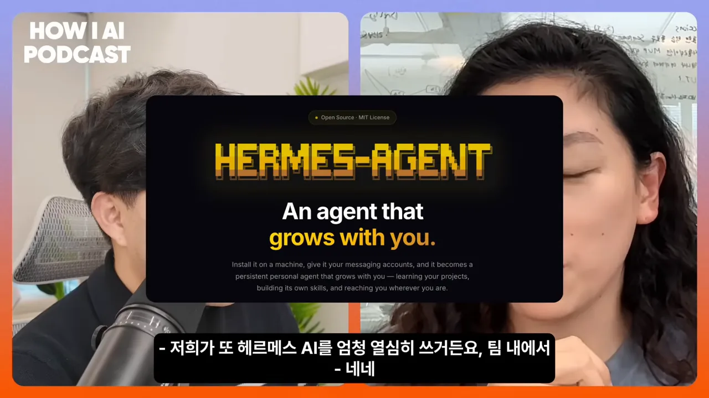
둘 다 지금을 신기하고 재미있는 시대라고 말해요. 얼마 전까지 공들여 만든 워크플로우가 새 도구가 나오자마자 의미가 없어지기도 해요. 진행자 팀도 Hermes Agent를 설치해 어떻게든 키워 보려는 중이래요.
AI를 많이 쓸수록 손으로 먼저
AI를 이만큼 쓰는 팀인데, Else 사무실 벽은 화이트보드 글씨로 가득해요. 아날로그로, 손으로 해야 하는 일에 가치를 많이 둔대요. 팀이 일하는 순서는 이래요.
초반 의사 결정은 사람이 잘하는 부분이라고 봐요. 도구를 쓴다면 화이트보드나 포스트잇처럼 머리를 말랑말랑하게 해 주는 걸 써요. AI를 엄청 많이 쓰지만 이 부분만큼은 내 머릿속에 확실히 잡혀 있어야 한다는 생각이 팀 전체에 있대요. 아래는 예전에 오래 쓰던 물리 칸반이에요. 화이트보드를 칸으로 나누고 색색의 포스트잇을 빼곡히 붙였어요.
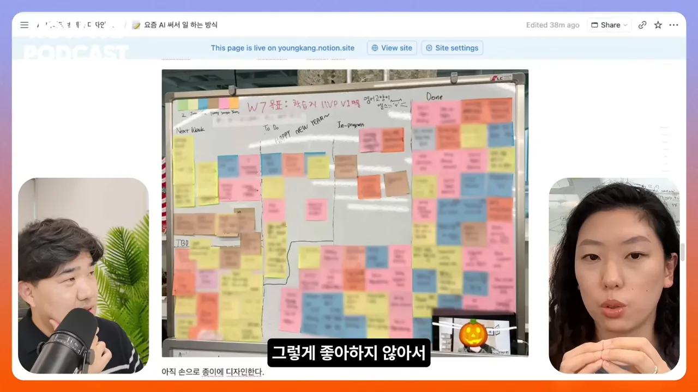
리모트보다 출근해서 일하는 걸 선호하는 것도 같은 이유예요. 마주 앉아 주고받는 대화에서 나오는 창의력을 더 높게 쳐요. 디자인도 아직 손으로 먼저 해요. 머릿속에 그림이 딱 그려지지 않으면 다음으로 잘 안 넘어간대요. 아래가 종이에 그린 화면 스케치예요. 왼쪽에 연필로 그린 화면 네모들이 있고, 오른쪽 노란 포스트잇에 화면 구성을 따로 적어 붙였어요.

핸드오프는 일부러 거칠게
강영화 님은 최근 다녀온 Amplitude 디자인 컨퍼런스 이야기도 해요. 그곳 프린시플 디자이너는 팀이 바이브 코딩으로 아주 작게, 빠르게 만든대요. 그런데 와이어프레임을 핸드오프할 때는 오히려 Comic Sans 같은 웃긴 폰트나 러프한 네모 박스만 쓴다는 거예요. 강영화 님은 이걸 사람의 사고가 가장 잘 돌아가는 형태로 일부러 바꾸는 거라고 해석해요.
너무 빨리 나오면 판단이 따라갈까요
진행자는 반대쪽 고민을 꺼내요. 예전엔 팀원과 논의하고 칸반에 포스트잇을 붙이고 와이어를 만드는 시간 동안 인사이트가 쌓였어요. 그래서 결과물이 사용자 문제를 잘 풀었다고 판단할 수 있었대요. 지금은 Claude Design에 "PRD 만들어 줘, 가설 기반 프로토타입 다섯 개 만들어 줘"라고 하면 20분도 안 돼 다 나와요. 생산성은 올랐지만 사람이 그 속도로 좋은 결정을 내릴 수 있는지는 물음표라는 거예요.
강영화 님은 토스 시절 직접 해 본 상상 프로젝트로 답해요. 로그를 어떻게 찍었는지 알아야 데이터 분석을 할 수 있으니, 디자인과 엔지니어링과 로깅을 한 화면에 보여 주면 어떨까 하는 실험이었어요. 실제로 구현되지는 않았대요. 아래 화면 위쪽 탭에 '디자인, 엔지니어링, 로깅'이 있고, 화면마다 붙은 주황색 라벨이 로그 이름이에요. 오른쪽 패널에는 로그 상세가 정리돼 있어요.
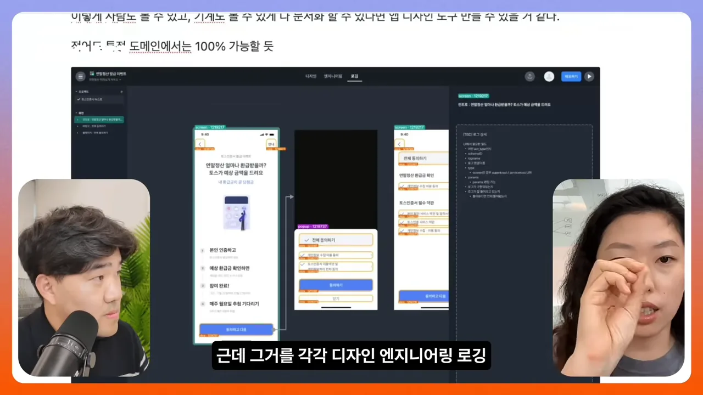
디자이너가 대체되기 어려운 이유는 의사 결정 과정이 흐릿해서 텍스트로 다 옮겨지지 않기 때문이에요. 그런데 LLM은 텍스트가 많아야 일을 잘해요. 그러니 거꾸로 의사 결정을 한곳에 모아 문서로 남겨 두면, 다른 사람에게 한 번에 전하기도 쉽고 병목도 줄어들 수 있다는 게 강영화 님 생각이에요.
기능을 다 넣으면 망해요
진행자는 지금이 이미지와 레퍼런스를 빠르게 모아 많은 페이지를 한꺼번에 만들 수 있는 시대라서, 정제된 고민 없이 기능을 잔뜩 넣고 싶어지기 쉽다고 짚어요. 강영화 님도 그렇게 한 번 망해 봤대요.
요즘은 디자이너가 아닌 사람도 바이브 코딩으로 제품을 만들 수 있다 보니, 만들고 나서 어떻게 해야 하냐고 피드백을 부탁하는 경우가 종종 있대요. 그때마다 꼭 하는 말이 있어요. "기능을 다 넣으면 다 망한다"예요.
Else 첫 버전과 두 번째 버전
아래는 Else 첫 버전의 Figma 화면 지도예요. 지난해 3월부터 5월까지 만든 버전이 위쪽에 넓게 퍼져 있어요. 작은 화면 수십 장이 여러 갈래로 이어져 있고, 결제 기능도 들어 있었어요. 아래쪽 작은 묶음이 6월부터 약 2주 동안 만든 다음 버전이에요.
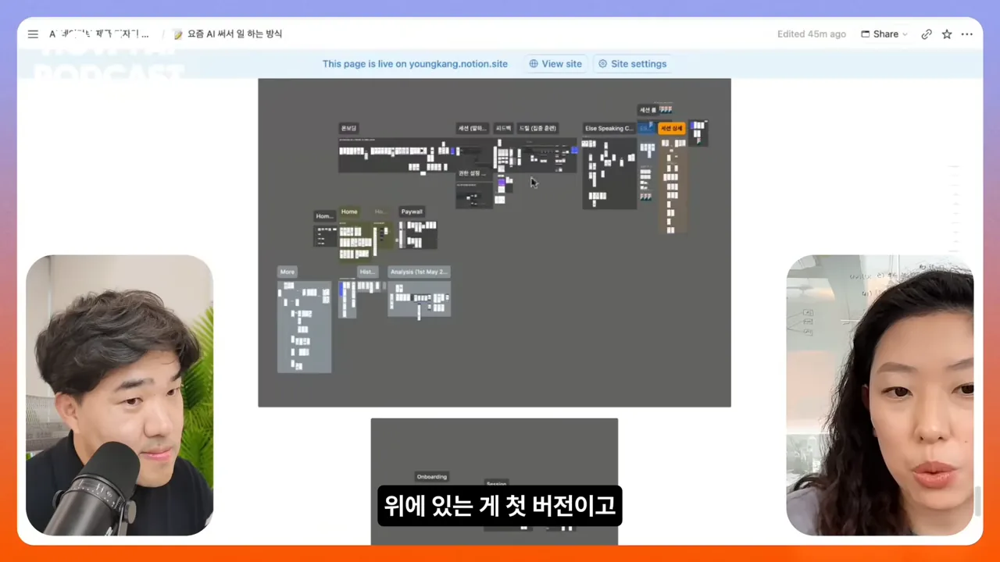
많이 만들었지만 사용자가 원하는 기능이 아니었고, 원할 만큼의 퀄리티도 나오지 않았어요. 만족하지 못한 사용자는 결국 쓰지 않았어요. 미국에서 3개월을 쏟았지만 흔적만 남고 쓰이지 않는 걸 보는 건 뼈아픈 실패였대요. 그래서 다음 버전은 반대로 갔어요. 아래 확대 화면을 보면 Onboarding, Session, Course 세 묶음뿐이에요.

| 첫 버전 | 두 번째 버전 | |
|---|---|---|
| 만든 기간 | 3~5월 | 6월부터 약 2주 |
| 담은 것 | 많은 기능, 결제 포함 | Onboarding, Session, Course만. 결제 없음 |
| 목표 | 제품을 갖춰 내놓기 | 핵심 가설 하나를 검증하기 |
| 결과 | 사용자가 쓰지 않음 | 지금 버전으로 디벨롭하는 바탕이 됨 |
강영화 님이 이 과정 내내 한 말은 하나예요. 그냥 만드는 건 의미가 없고, 사람들이 쓰게 만들어야 해요. 쓰는 모습을 보면서 넣을 걸 정하고, 더 쓰게 만드는 쪽으로 다듬었대요. 진행자는 이걸 생산성이 올라간 만큼 '발라내는 눈'이 더 중요해졌다는 말로 정리해요. 예쁘지만 아무도 쓰지 않는 제품이 쏟아지는 상황이니까요.
사용자를 만나 보세요
기능이 많아지는 문제나 디자인 완성도 문제로 피드백을 부탁받으면, 강영화 님은 거의 한 가지만 말해요. 유저를 만나라는 거예요. 만나면 배우는 게 엄청 클 거라고요.
인스타툰 작가가 만든 분석 도구
예시는 커뮤니티에서 알게 된 오문 님이에요. 아래가 오문 님의 인스타그램 계정이에요. 주황색 카드에 '발악하듯 허비한 시간은 안목이 된다', '스스로를 믿는 가장 확실한 방법' 같은 문장과 흰 토끼 캐릭터를 그린 인스타툰이 이어져 있어요.
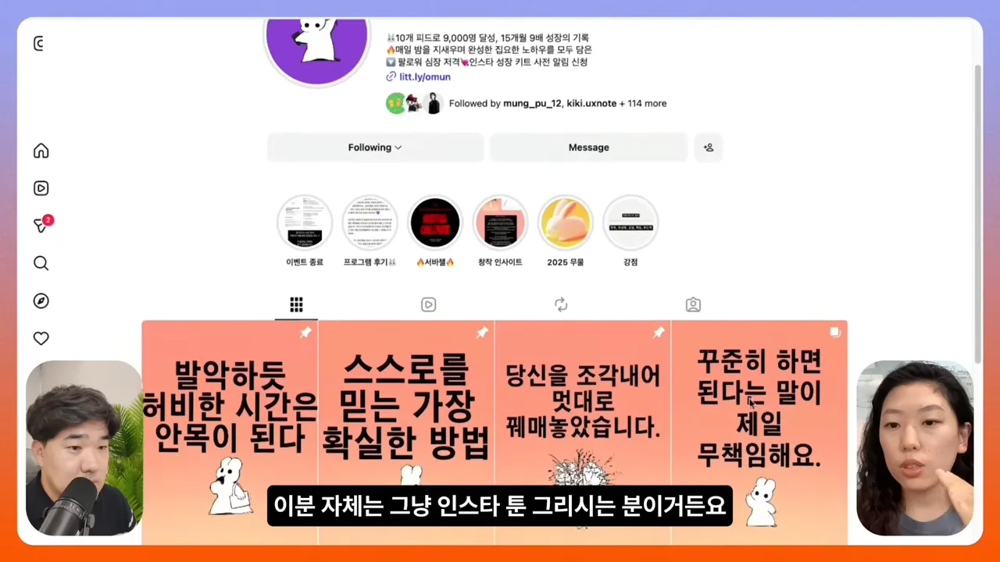
오문 님은 설 연휴에 Claude Code로 SNS(Social Networking Service) 계정 분석 도구를 만들었어요. 아래 게시물이 그 도구의 사전 판매 공지예요. '인스타 계정 분석기 1회 체험권 제공 이벤트'라는 제목과 '오문, 명절에 가족도 안 보고 SNS 계정 성장 치트키 만듦'이라는 말풍선이 보여요.
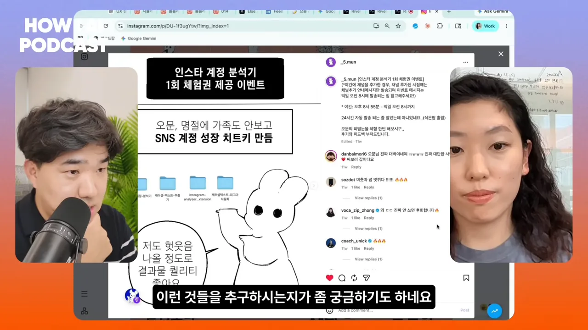
도구 이름은 EngageRank예요. 계정을 넣으면 인게이지먼트를 분석한 보고서를 보여 줘요. 아래가 그 보고서 화면이에요. 위쪽에 EngageRank 제목, 아래에 분석 항목이 표로 정리돼 있어요. 강영화 님은 처음 받았을 때 디자인이 살짝 아쉬웠다고 해요.
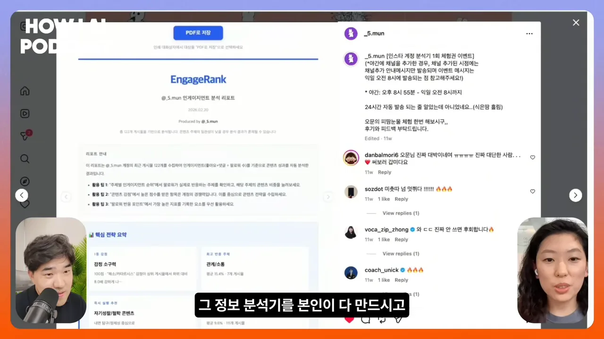
강영화 님이 한 일은 많지 않아요. 유저를 만나 보라고 하고, 인터뷰하는 법을 조금 알려 줬어요. Y Combinator의 'How to Talk to Users' 영상을 보여 주고, 사람들이 어떤 고민으로 이걸 쓰는지 알아보라고 했대요. 그러자 오문 님이 알아서 AI와 함께 질문지를 만들고 10명 정도를 만났어요. 사람들이 뭘 좋아하고 뭐가 필요하고 뭐가 어려운지, 실제로 어떻게 행동하는지 물으면서 고칠 방향을 찾았어요. 누구나 할 수 있다는 걸 알게 된 신기한 경험이었대요.
토스에서 배운 것
진행자는 매출까지 낸 사람에게 "더 많이 만드세요"가 아니라 "유저를 만나세요"라고 하는 이유를 물어요. 강영화 님은 토스에서 배운 것으로 답해요. 같은 개선이라도 어디서 출발했느냐에 따라 임팩트가 달랐대요.
결국에 사용자가 어떤 걸 불편하게 생각하고 어떤 걸 어렵게 생각하는지를 볼 수 있는 눈은 또 사람만 볼 수 있거든요.
— 영상 33:26
공감하며 다가가면 더 좋은 제품을, 더 좋은 방식으로 만들 수 있다는 게 강영화 님 생각이에요. 진행자는 이렇게 정리해요. 디자이너에게 사용자 중심 인터뷰나 숨은 니즈 찾기는 당연한 일이지만, 일반 사람은 거의 몰라요. 그걸 알려 주기만 해도 제품이 좋아진다는 거예요.
공감력과 감각은 사람 몫이에요
진행자는 이렇게 빨리 변하는 시대에 왜 공감 같은 정성적인 능력을 계속 붙들어야 하는지 물어요. 강영화 님의 답은 단순해요. 디지털 제품을 쓰는 건 결국 사람이에요. 사람이 가장 중요한 이해관계자이고, 사람을 얼마나 이해하느냐가 성공을 정한다고 봐요.
딸각의 함정
사람이 빠지면 와닿지 않는 무언가를 내놓기 쉬워요. 강영화 님은 이걸 '딸각의 함정'이라고 불러요. 버튼 한 번에 만들어지니 실제로 도움이 될 것처럼 느껴지고, 일단 만들어 두면 완성될 것 같은 착각이에요. 너무 쉽게 되니까 Claude Code로 디자인하면서 본인도 종종 빠졌대요. 사람들이 원하고 좋아하는 건 어느 정도 완성도를 갖춘 제품과 기능이라는 걸 요즘 더 느낀대요.
진행자도 콘텐츠와 사업 두 가지를 만들면서 비슷한 경험을 했어요. 마감, 카피라이팅, 마음을 움직이는 부분까지 AI가 할 거라 믿고 에이전트를 만들고 카드 뉴스를 자동으로 뽑아 보려 했는데, 하다 보니 바보 같은 짓이라는 생각이 들었대요. 사람들이 보고 "이게 정말 필요했어"라고 느껴야 좋은 콘텐츠인데, 생산성만 쫓다 보니 그걸 잊었다는 거예요.
Else가 사람에게 남긴 일
Else도 같은 결론을 냈어요. 아래가 Else 인스타그램의 카드 뉴스예요. '오해는 하지 마 영어로 말하는 방법', "'Fire' 진짜 뜻은? 해고하다 vs 개쩐다", '호주에서 살다옴? 소리 듣는 호주 슬랭'처럼 표현 하나를 설명해 주는 형식이에요.
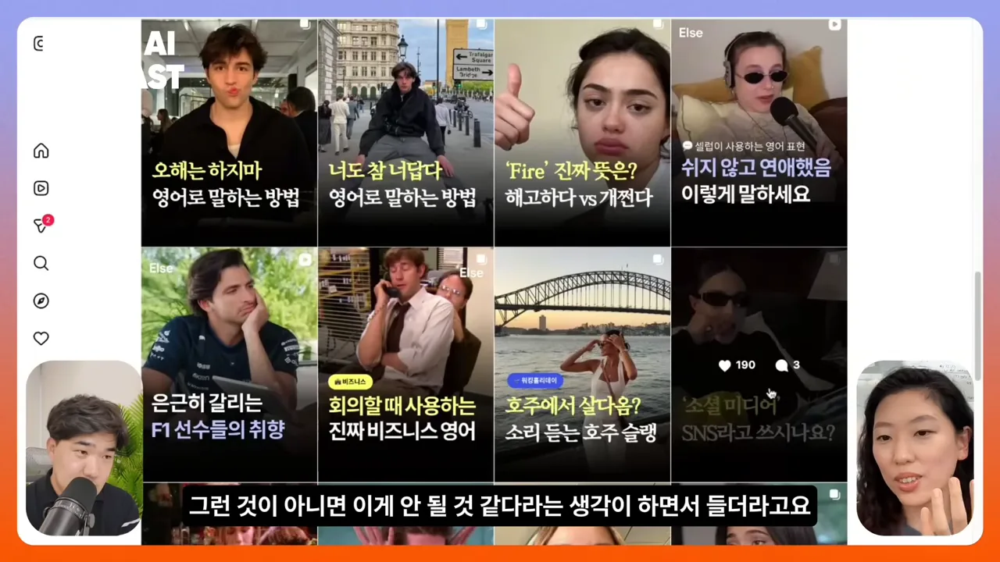
직접 해 보니 이걸 만드는 마케터의 감각 없이는 안 되겠다는 생각이 들었대요. 감각으로 써야 하는 부분은 사람에게 맡기고, 사람들이 정말 만족하는 걸 만들어야 한다는 판단이에요.
또 하나는 매일 학습지 세 개를 골라 보여 주는 기능이에요. 이것도 '인간 지능'으로, 즉 사람이 큐레이션해요. 대신 그 일이 너무 힘들면 안 되니까, 마케터가 직접 어드민을 구현해 보고 자기가 쓰기 편한 방식으로 고쳐 가며 배웠대요. 아래가 그 어드민이에요. 'Daily Learning Resources'라는 제목 아래 5월 12일부터 16일까지 날짜별로 학습 콘텐츠 카드가 세로로 쌓여 있어요.
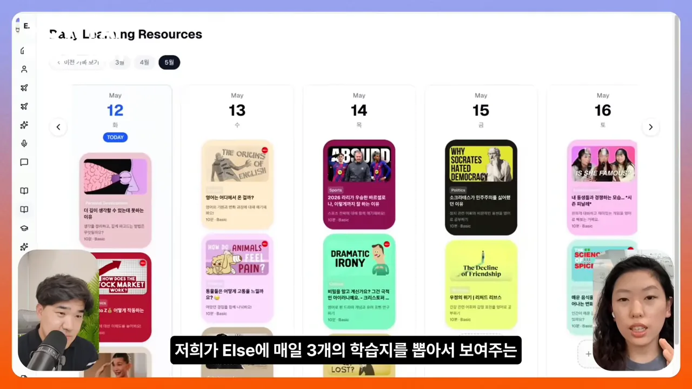
강영화 님의 정리는 이래요. 사람이 할 수 있는 건 사람이 하게 두고, AI가 잘하거나 생산성을 크게 올릴 수 있는 건 도구를 만들어 해결해요. 결국 사람에게 닿는 무언가를 만들어야 사람들이 돈도 내고 만족하며 써요. 진행자는 마케터가 가진 암묵지를 언급하며, 주변 사람들에게서 얻는 조각 정보와 트렌드를 감지하는 센싱이 좋은 콘텐츠를 만들고 디자인도 마찬가지라고 덧붙여요.
감각은 어떻게 키울까요
답은 좋은 걸 많이 보라는 거예요. 좋은 작품일 수도, 좋은 앱일 수도 있어요. 많이 써 보고, 내가 왜 좋아했는지 분석적으로 생각해서 글로 정리하고, 더 자세히 들여다보는 연습을 하라고 해요. 그게 많이 도움이 된대요.
마지막으로 시청자에게 남긴 말은 이거예요. 남들처럼 화려하거나 압도적으로 새로운 방식으로 AI를 쓰지 않아도 괜찮다고 해요. 내가 맞다고 생각하는 방식이 있으면 밀고 나가면 되고, 아니다 싶으면 안 해도 된대요.
꼭 모든 사람이 간다는 방향대로 안 가도 된다. 이런 말씀을 드리고 싶어요.
— 영상 40:09
진행자는 웃으며 "하지만 AI는 조금 배우시는 게 좋다"고 덧붙이고, 강영화 님도 자기도 많이 쓰고 있다고 답하며 대화가 끝나요.